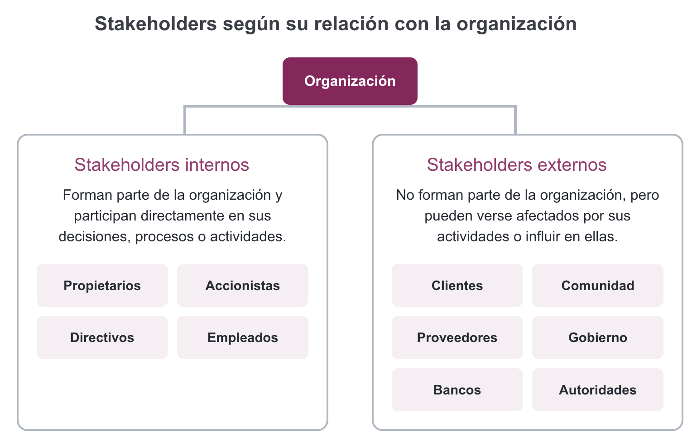
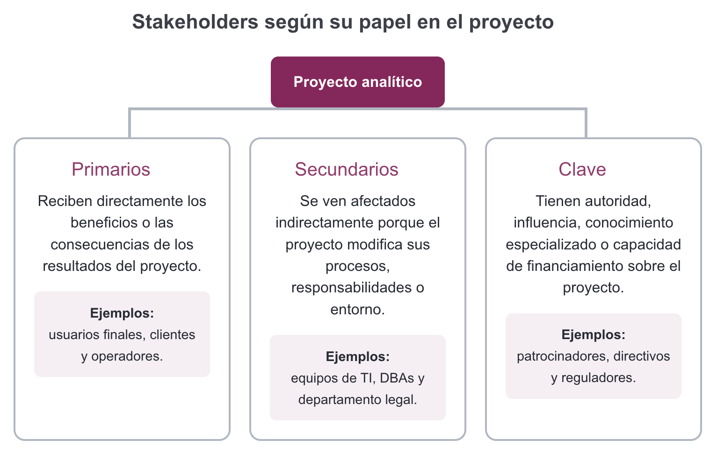
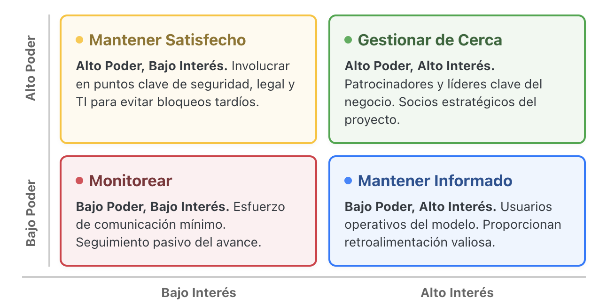

De una necesidad de negocio a un problema analítico
¿Cómo pasamos de necesito datos a un proyecto que realmente ayuda a decidir?
Almacenes y Mineria de datos
2026-08-16
Datos de contacto
Nombre y formación Diego Villalba Físico de formación
Posgrado Maestría en Ciencia e Ingeniería de la Computación IIMAS · UNAM
Experiencia profesional ML Engineer Prosperia
Modelos visión-lenguaje para diagnóstico médico Interpretabilidad mecanística Eficiencia de LLM mediante cuantización
Materiales del curso
El contenido que veremos durante el curso estará disponible en este sitio:
diegoviillalba.github.io/almacenamienes-y-mineria-de-datos/
Preparación clase a clase Al final de cada sesión les adelantaré los temas de la siguiente. Así podrán revisar el material con anticipación y llegar preparados.
Videos de clase Dependiendo de la disponibilidad, podrán acceder a los videos de cada clase. Esto sta sujeto a la disponibilidad del grupo.
Las afinidades aparecen antes que los equipos

En tríos · 80 segundos por persona · también puedes responder por escrito
Tres señales para encontrar colaboradores
Producto: una coincidencia + una diferencia + un registro breve de intereses.
Una coincidencia une; una diferencia fortalece
Coincidencia ¿Qué problema o aprendizaje compartieron?
Diferencia valiosa ¿Qué aportaría una perspectiva distinta?
Estas señales serán insumo para comparar problemas y formar equipos más adelante.
Un pedido detallado todavía puede ser ambiguo
“Las ventas de ropa de mujer bajaron este mes. Necesito un reporte con todos los clientes y sus compras para lanzar un descuento.”
- ¿Qué significa “bajaron”?
- ¿Por qué “todos” los clientes?
- ¿El descuento ya es la decisión?
“Necesito datos” no dice qué decisión mejorar
Petición“Necesito un reporte”
Conversación¿Qué falta aclarar?
Decisión¿Qué acción debe mejorar?
Objetivo¿Qué evidencia necesita?
¿Cómo pasamos de “necesito datos” a un proyecto que realmente ayuda a decidir?

“Queremos un Dashboard de Clientes 360 para entenderlos mejor y ser una empresa data-driven.” No se define qué acción cambiará, qué problema resolverá ni qué umbral activará una respuesta.
Dashboard 360: mucha información, ninguna decisión
ERP + web; tráfico físico/digital, demografía, frecuencia, ticket y productos vistos.
Marketing dice “qué interesante”; Operaciones no encuentra cómo actuar sobre el inventario.
Las campañas siguen por intuición y el reporte queda archivado.
Antes de los datos están las personas involucradas
Stakeholder: persona, grupo u organización que puede influir, aportar, bloquear o verse afectada por el proyecto o la decisión.
Apoyo conceptual: Bryson (2004), doi:10.1080/14719030410001675722.
Dos lentes describen relaciones distintas

Dos lentes describen relaciones distintas

Privacidad/legal puede ser interno + secundario + clave al mismo tiempo.
Ejemplo: Aeropuerto internacional

Poder e interés orientan cómo involucrar

Hipótesis para discutir: la posición cambia con el alcance y la fase.
Marco y estrategias: PMI; antecedente comúnmente asociado: Mendelow (1981).
El grupo debe convertir el pedido en una decisión
Producto de una hoja Personas · supuestos · preguntas · decisión · objetivo · algo pendiente de validar
“Analizar [resultado] en [población] durante [periodo] para que [actor] decida [acción], sujeto a [capacidad], y observar [medida].”
Primero personas y preguntas; después datos
Si se bloquean: empiecen por “¿quién decide?” y “¿quién vive la consecuencia?”.
Respuestas distintas pueden ser válidas si explican sus supuestos
Grupo A ¿Qué actor priorizó? ¿Qué supuesto lo llevó allí?
Grupo B ¿Qué decisión formuló? ¿Qué término dejó por validar?
Reporte relámpago: 45 segundos por grupo.
Un objetivo útil se refina y se valida
Antes: “reporte de todos los clientes” Después: población + resultado + periodo + decisión + capacidad + medida
Las afinidades sirven para comparar problemas, no soluciones
No todavía: “quiero usar redes neuronales” Mejor: “quiero comprender qué factores se asocian con el abandono y qué intervención convendría evaluar”
Registra qué problema te mueve y cómo puedes contribuir
Hoy registramos señales; en la próxima sesión compararemos problemas.
De la necesidad al proyecto hay una cadena de decisiones
Pasamos de “necesito datos” a un proyecto útil comprendiendo a las personas, aclarando la decisión y acordando un objetivo analítico validable. Después investigamos datos y métodos.
1 · ¿Qué preguntarías antes de pedir datos? 2 · ¿Qué problema te interesaría explorar? 3 · ¿Qué habilidad o interés aportarías? 4 · ¿Qué duda todavía tienes?
La próxima sesión traeremos problemas, no algoritmos
Un proyecto de datos útil no comienza con el algoritmo; comienza comprendiendo a las personas, la decisión y el problema.
Facultad de Ciencias UNAM · Almacenes y Minería de Datos